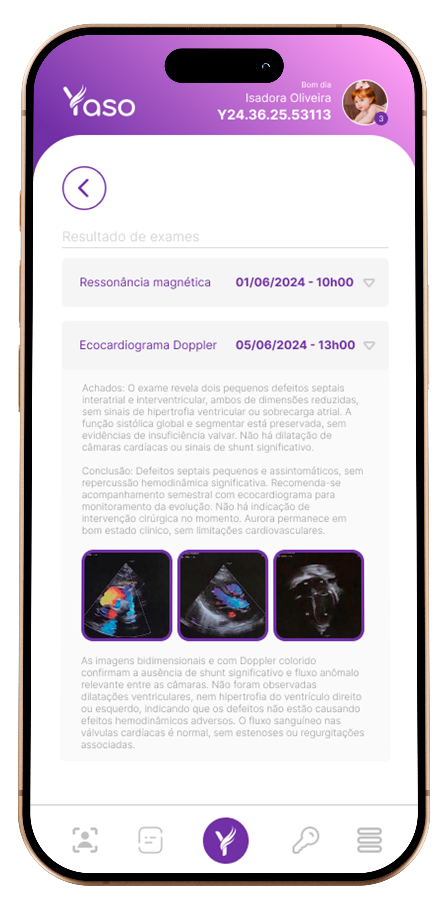

Projeto de Iniciação Científica FIAP 2024
Nota ao Leitor
O Yaso surgiu de necessidades reais e tangíveis. Por muito tempo, eu ouvi uma frase que fazia sentido, mas ainda não havia se concretizado para mim: "onde há dor, há oportunidade de mudança".
Foi com essa ideia em mente que, quando descobri que seria pai, o Yaso começou a tomar forma. Nas primeiras semanas, comecei a pesquisar sobre o que me aguardava. São tantas informações dispersas: quais vacinas tomar e quando, a linha do tempo da gestação, consultas, exames... Nada centralizado. Foi aí que percebi a primeira necessidade do Yaso. Logo, surgiu a segunda feature: centralização de informações e acompanhamento.
À medida que o parto se aproximava, percebi outra dificuldade: os documentos estavam espalhados, dificultando saber o que eu já tinha e o que ainda precisava reunir. Pode parecer simples resolver isso com um drive ou um grupo no WhatsApp, mas essas soluções não são práticas ou funcionais.
Quando minha filha Marília nasceu, surgiram novas necessidades. Vacinas, calendários, quais aplicáveis pelo SUS e quais em clínicas particulares. Essa questão levou ao desenvolvimento da feature de vacinas no Yaso.
Marília nasceu com algumas questões médicas que, embora não fossem graves, exigiam atenção. Como pais de primeira viagem, qualquer situação era motivo de preocupação. Surgiu, então, a primeira feature core do Yaso: a organização de exames, desde os pedidos até os resultados. A complexidade de múltiplos logins, tokens de autorização e solicitações de exames tornou evidente a necessidade de um sistema que centralizasse tudo. Aos três meses de Marília, já haviam mais de 16 exames de imagem, foi então que o modo de exames do Yaso foi criado.
Gerenciar tudo isso em um grupo familiar também se mostrou inviável. Foi assim que surgiu o modo família, permitindo o acesso compartilhado e centralizado dos dados médicos da criança ou dependente.
Nessa altura, o Yaso já era uma realidade. Com o terceiro mês de vida de Marília, comecei a buscar informações em grupos de pais e entre profissionais de saúde. Para minha surpresa, a resposta era quase unânime: "Não existe nada assim." Isso me motivou ainda mais a fazer acontecer.
O início do último ano acadêmico e a oportunidade de uma iniciação científica se alinharam perfeitamente. Submeti uma versão simples do projeto à faculdade e, para minha surpresa, fomos aprovados.
Com o avanço dos projetos da faculdade, o silêncio sobre a iniciação científica não me desanimou, mesmo com o pouco tempo disponível para trabalhar. E, à medida que o projeto evoluía, outras necessidades foram surgindo. Uma delas, por exemplo, foi o modo de emergência, inspirado em um momento simples, mas marcante: vi uma senhora idosa em um mercado, claramente sozinha. Me questionei: se ela passasse mal ali, como seria socorrida? Questões simples como seu nome, seu tipo sanguíneo, seus medicamentos, suas alergias, seus contatos de emergência, tudo isso poderia ser fundamental para salvar sua vida e apenas 1 segundo poderia fazer a diferença. A partir disso, nasceu o modo de emergência, pensado para situações em que informações vitais precisam estar acessíveis, mesmo com o telefone bloqueado.
Outros momentos reforçaram a necessidade do modo de emergência. Como um jovem que vi convulsionando na rua. Por não haver dados sobre ele, o atendimento foi lento. O Yaso poderia fornecer essas informações rapidamente: nome, tipo sanguíneo, contatos de emergência, alergias, medicamentos.
Com o tempo, o Yaso cresceu. De quatro features, chegamos a 93, detalhadas no documento oficial do projeto.
Quando o projeto foi aprovado, tínhamos três semanas para entregar. Passamos os primeiros dias organizando a teoria, o plano de desenvolvimento, pesquisas e concorrentes. Os últimos quinze dias foram dedicados à produção técnica. Muitos bugs surgiram, e mesmo com o MVP incompleto, sabíamos que nossa missão estava cumprida.
As pessoas que tiveram contato com o Yaso sempre diziam algo parecido: "Nunca vi algo assim." Foi aí que percebi: o Yaso não era apenas para pais de primeira viagem, mas para todos. A ideia de descentralizar os dados médicos foi um dos pilares fundamentais do Yaso. Durante minhas pesquisas, descobri que o SUS tentou, por uma década, integrar a rede pública e privada com um prontuário único de saúde. O Yaso, guardadas as devidas proporções, é um ecossistema avançado de dados médicos, focado na descentralização, no entanto, atende perfeitamente essa necessidade do setor público de saúde.
Para critério de curiosidade, listei todas as 93 features do Yaso, separadas pelos toggles abaixo.
Obrigado pela leitura.
Resumo do projeto
O projeto Yaso desenvolve um aplicativo mobile voltado para o gerenciamento descentralizado de dados médicos pessoais. Com o objetivo de permitir que o usuário possa centralizar informações como vacinas, consultas, exames e medicamentos, o Yaso permite que os usuários tenham controle total sobre seus dados de saúde, garantindo que possam ser acessados e compartilhados de forma rápida e segura.
A abordagem teórica do projeto está baseada nos conceitos de descentralização de dados, segurança da informação e usabilidade, integrando funcionalidades como criptografia de ponta, autenticação em duas etapas e tokens de consentimento.
O Yaso diferencia-se ao eliminar a dependência de sistemas institucionais fragmentados, permitindo que o usuário seja o principal gestor de seus dados. Além disso, o sistema se expande com a integração de APIs de saúde, como a do SUS, e oferece funcionalidades avançadas, como o escaneamento de documentos, integração com wearables e dispositivos móveis, e geração automática de resumos médicos através de inteligência artificial (IA).
Os resultados obtidos até o momento indicam que o Yaso não só facilita o acesso a informações médicas importantes, mas também promove uma melhor gestão da saúde para usuários e familiares, aprimorando o atendimento médico em emergências e consultas de rotina.
Introdução
O Yaso é uma plataforma digital voltada para a gestão centralizada e segura de dados médicos pessoais e familiares. Seu principal objetivo é permitir que os usuários controlem e organizem suas informações de saúde, como exames, vacinas, consultas e medicamentos, em um único ambiente acessível, seguro e integrável com instituições de saúde. O projeto surgiu da necessidade de resolver um problema comum: a fragmentação e a dificuldade de acessar informações de saúde, especialmente em situações críticas como emergências médicas.
O Yaso apresenta uma série de funcionalidades, como o Modo Emergência, que permite o acesso rápido a dados essenciais, como tipo sanguíneo e alergias, mesmo com o smartphone bloqueado; o Modo Família, que facilita o compartilhamento de dados médicos entre membros da família; e o Token de Consentimento, que garante o controle total sobre o compartilhamento de informações com profissionais de saúde. Além disso, o Yaso utiliza tecnologia de criptografia avançada e autenticação em duas etapas, proporcionando um nível superior de segurança e conformidade com a LGPD (Lei Geral de Proteção de Dados).
O Yaso também possui uma integração robusta com APIs de saúde, como o SUS e laboratórios privados, permitindo que exames e prescrições médicas sejam inseridos diretamente no sistema, economizando tempo e eliminando a necessidade de documentos físicos. O projeto não apenas melhora a organização e acessibilidade dos dados médicos, mas também oferece uma solução eficiente para médicos e instituições, que podem acessar essas informações de maneira controlada e em tempo real.
Objetivos do Projeto
O Yaso atende aos principais objetivos de um projeto de Iniciação Científica (IC) ao promover o envolvimento de alunos em atividades práticas de pesquisa, desenvolvimento tecnológico e inovação, com foco na solução de problemas reais no campo da saúde digital.
Inserção em Atividades de Pesquisa, Desenvolvimento Tecnológico e Inovação:
O projeto Yaso envolve os alunos diretamente no desenvolvimento de uma plataforma tecnológica inovadora para o gerenciamento de dados médicos, desde a concepção até a implementação de funcionalidades avançadas, como o Token de Consentimento, Integração com APIs de Saúde e Criptografia de Dados. Esse processo permite que os estudantes explorem e apliquem conceitos de pesquisa em áreas como segurança de dados, criptografia, usabilidade e engenharia de software. Além disso, os estudantes têm a oportunidade de realizar testes com usuários e validar a solução, criando um ciclo completo de pesquisa, desenvolvimento e aplicação prática.
Formação de Recursos Humanos para Fortalecer a Capacidade Inovadora das Empresas:
Ao participar do desenvolvimento do Yaso, os estudantes adquirem habilidades técnicas relevantes, como programação em React Native, Java, Node.js, além de conhecimentos em integração de APIs e sistemas de banco de dados escaláveis, como o Oracle. Essas competências são altamente demandadas por empresas inovadoras no mercado de tecnologia e saúde digital. O projeto também oferece uma oportunidade para os estudantes se envolverem em processos de inovação tecnológica que podem ser aplicados a empresas do setor de saúde, impulsionando a transformação digital nessa área.
Formação do Cidadão Pleno, Criativo e Empreendedor:
O Yaso proporciona uma abordagem criativa para a solução de problemas sociais e comunitários, especificamente no campo da saúde, oferecendo aos estudantes a chance de desenvolver uma plataforma que pode impactar positivamente a vida de muitas pessoas. A centralização e controle de dados médicos proporcionados pela plataforma tornam o usuário empoderado sobre suas próprias informações de saúde, gerando um impacto positivo nas comunidades.
Os estudantes envolvidos no projeto têm a oportunidade de pensar de forma empreendedora, buscando melhorias contínuas no sistema, considerando monetização e expansão de funcionalidades, além de lidar com desafios reais de implementação e escalabilidade.
Assim, o Yaso não apenas prepara os estudantes para o mundo da pesquisa, mas também os capacita a participar ativamente no desenvolvimento de soluções tecnológicas e inovadoras, alinhadas com as demandas do mercado e da sociedade.
Objetivo geral
O objetivo geral do projeto Yaso de iniciação científica é desenvolver uma plataforma como uma ferramenta digital que centraliza e gerencia dados médicos pessoais e familiares de maneira segura, acessível e eficiente. O foco principal é solucionar problemas relacionados à fragmentação de dados médicos, falta de acesso rápido em emergências e ao controle limitado que os usuários têm sobre suas informações de saúde.
Objetivamente, será produzida uma plataforma digital, disponível como aplicativo móvel e plataforma web, que oferece funcionalidades como centralização de dados médicos, modo de emergência, token de consentimento para compartilhamento de informações, além de outros recursos voltados ao gerenciamento completo de dados de saúde, tanto individuais quanto familiares.
A pesquisa se concentra no desenvolvimento tecnológico de uma solução que unifique os dados médicos em uma única plataforma, capaz de resolver a dispersão dessas informações e possibilitar o controle e acesso imediato a dados relevantes em situações de emergência. A proposta envolve também a implementação de recursos de segurança e privacidade, como criptografia avançada e tokens de consentimento para o compartilhamento controlado das informações.
Está sendo proposto o desenvolvimento de uma solução inovadora e tecnológica para o gerenciamento de dados de saúde, que visa solucionar desafios como a fragmentação de informações médicas, melhorando o controle dos usuários sobre seus dados e oferecendo soluções seguras e de fácil acesso, especialmente em momentos de urgência. Além disso, a integração com APIs de saúde, como o SUS e laboratórios, é uma das inovações propostas.
Objetivos Específicos
Com base no objetivo geral no conteúdo do documento, estes são os objetivos específicos que se desdobram para alcançar o objetivo geral de desenvolvimento da plataforma Yaso:
1. Analisar as Necessidades do Usuário e do Mercado de Saúde Digital:
Pesquisar os principais desafios enfrentados por usuários e profissionais da saúde relacionados à fragmentação de dados médicos. Identificar as funcionalidades mais valorizadas em plataformas de saúde digital. Estudar o mercado de saúde digital para validar a oportunidade de soluções como o Yaso.
2. Desenvolver o Módulo de Centralização de Dados Médicos:
Criar um sistema que permita o armazenamento seguro de exames, laudos, vacinas, consultas, prescrições e outros dados médicos pessoais e familiares. Implementar uma interface de fácil usabilidade que permita aos usuários visualizar e gerenciar seus dados médicos em uma única plataforma.
3. Implementar o Modo Emergência:
Desenvolver uma função que permita o acesso rápido a informações críticas de saúde (tipo sanguíneo, alergias, medicamentos) em situações de emergência, mesmo com o telefone bloqueado. Testar e garantir a funcionalidade do modo de emergência para que ele seja intuitivo e eficiente no uso prático.
4. Criar o Sistema de Token de Consentimento:
Desenvolver um mecanismo que possibilite o controle granular sobre o compartilhamento de dados médicos, permitindo ao usuário decidir quem pode acessar suas informações, por quanto tempo e quais dados podem ser visualizados. Garantir que o sistema respeite as regulamentações de privacidade e segurança de dados, como a LGPD.
5. Integrar o Yaso com APIs de Saúde Pública e Privada:
Desenvolver integrações com sistemas de saúde pública (como o SUS) e laboratórios privados para importar automaticamente exames e laudos médicos, evitando uploads manuais. Garantir que essas integrações sejam seguras, rápidas e fáceis de usar para os usuários finais.
6. Garantir a Segurança e Privacidade dos Dados Médicos:
Implementar criptografia avançada (AES-256) para proteger os dados médicos armazenados e transmitidos. Incluir autenticação em duas etapas (2FA) para o acesso à plataforma, adicionando uma camada extra de segurança. Implementar logs de acesso para monitorar atividades suspeitas e garantir total transparência.
7. Desenvolver Funcionalidades para Famílias e Médicos:
Criar o Modo Família, que permita o compartilhamento seguro de dados médicos entre membros familiares, com controles específicos de acesso. Desenvolver uma versão do Yaso para médicos, que permita a visualização dos dados médicos dos pacientes mediante o consentimento destes.
8. Realizar Testes de Usabilidade e Segurança:
Realizar testes com usuários finais para validar a interface, usabilidade e desempenho da plataforma. Conduzir auditorias de segurança para identificar e corrigir possíveis vulnerabilidades no sistema antes do lançamento.
9. Planejar e Executar o Lançamento da Plataforma:
Definir uma estratégia de lançamento beta para um grupo selecionado de usuários, a fim de coletar feedback e realizar ajustes finais. Planejar o lançamento público do Yaso, incluindo campanhas de marketing digital e eventos para promover a plataforma entre usuários finais e profissionais de saúde.
Esses objetivos específicos são cruciais para desmembrar o desenvolvimento da plataforma Yaso, garantindo que cada funcionalidade proposta seja cumprida de forma estruturada, levando ao alcance do objetivo geral de oferecer uma solução digital eficiente para o gerenciamento de dados médicos.
Estado da Arte
O projeto Yaso aborda a gestão de dados médicos pessoais e sua centralização por meio de plataformas digitais. A seguir, apresento uma análise e fundamentação teórica baseada em trabalhos relacionados e tecnologias aplicadas na área de saúde digital.
1. Centralização de Dados Médicos e Prontuários Eletrônicos:
A gestão de prontuários eletrônicos do paciente (PEP) tem sido uma das principais inovações nas instituições de saúde ao redor do mundo. No Brasil, o Sistema Único de Saúde (SUS) lançou o e-SUS, um projeto voltado para unificar as informações de saúde do país. No entanto, a fragmentação entre estados e municípios ainda impede a implementação de um prontuário único e completo. Diferente do e-SUS, o Yaso propõe uma abordagem centrada no usuário, permitindo que os dados sejam acessíveis e controlados diretamente pelos pacientes, independentemente das instituições de saúde envolvidas.
2. Controle de Consentimento de Dados:
A proteção e privacidade dos dados médicos são preocupações centrais na saúde digital. Um estudo desenvolvido pelo MIT, chamado MedRec, utiliza blockchain para garantir o controle e rastreamento de acessos aos dados dos pacientes, permitindo que eles decidam quem pode visualizar suas informações. O Yaso adota uma abordagem semelhante por meio do Token de Consentimento, que proporciona aos usuários controle total sobre o acesso a seus dados médicos, reforçando a privacidade conforme exigências legais como a LGPD.
3. Plataformas Digitais de Saúde:
Outras plataformas que já têm destaque no cenário internacional incluem o Zocdoc, uma plataforma digital que conecta pacientes a profissionais de saúde para agendamento de consultas, e o Ada Health, que utiliza inteligência artificial para sugerir diagnósticos preliminares com base nos dados dos usuários. Embora essas plataformas resolvam problemas específicos, o Yaso oferece uma solução mais completa, integrando dados médicos, funcionalidades familiares e emergenciais em um único ambiente.
4. Wearables e IoT na Saúde:
O uso de dispositivos wearables e IoT tem se mostrado uma tendência crescente no monitoramento da saúde. A Apple Health, por exemplo, já utiliza a tecnologia para monitorar e sincronizar dados de saúde com dispositivos móveis. O Yaso também se integra com dispositivos como esses para ampliar suas funcionalidades, permitindo que o usuário monitore sua saúde em tempo real e tenha todos os dados centralizados em um só lugar.
5. Segurança de Dados com Criptografia:
A segurança dos dados de saúde é uma preocupação crescente, e o Yaso adota medidas rigorosas, como a criptografia AES-256 e a autenticação em duas etapas (2FA), para proteger as informações armazenadas. Essas tecnologias são amplamente recomendadas para garantir a conformidade com normas de proteção de dados e aumentar a confiança dos usuários.
Justificativas
O Yaso é um projeto relevante que responde a uma necessidade crescente na área da saúde: a dificuldade de gerenciar e acessar informações médicas de forma centralizada e segura. A fragmentação de dados de saúde entre diferentes sistemas e instituições gera ineficiências que afetam diretamente o tempo de resposta médica, especialmente em emergências.
O Yaso agrega valor ao mercado ao resolver essa questão, oferecendo uma plataforma que organiza e centraliza todos os dados de saúde de um indivíduo ou família, permitindo um acesso rápido, fácil e seguro. Além disso, o Yaso proporciona benefícios diretos a médicos e instituições de saúde, agilizando o acesso a informações médicas e evitando a repetição de exames e laudos, o que resulta em um atendimento mais eficiente.
Do ponto de vista social, o Yaso também contribui para a inclusão tecnológica na área da saúde, capacitando indivíduos e famílias a gerenciarem melhor sua saúde e seu histórico médico, o que pode levar a decisões mais informadas e, consequentemente, melhores resultados clínicos. O projeto também fomenta a integração com sistemas de saúde pública e privada, promovendo uma transformação digital que pode reduzir burocracias e otimizar recursos no setor de saúde.
Cronograma
| Etapa | Mês 01 | Mês 02 | Mês 03 | Mês 04 | Mês 05 | Mês 06 | Mês 07 | Mês 08 | Mês 09 | Mês 10 | Mês 11 | Mês 12 |
|---|---|---|---|---|---|---|---|---|---|---|---|---|
| 1. Pesquisa e Planejamento |  |
|||||||||||
| 2. Prototipagem e Design | |
|
||||||||||
| 3. Desenvolvimento do MVP | |
|
|
|
||||||||
| 4. Integração de APIs e Funcionalidades | |
|
|
|
||||||||
| 5. Testes e Validação | |
|
||||||||||
| 6. Lançamento Beta | |
|
||||||||||
| 7. Lançamento Público | |
|
|
|||||||||
| 8. Manutenção e Atualizações | |
|
||||||||||
| 9. Adição de novas features (versão 2.0) | |
|
||||||||||
| 10. Adição de novas features (versão 3.0) | |
|
Os pontos mais relevantes e de maior atenção do desenvolvimento se concentram no desenvolvimento do APP Mobile Paciente em React Native composto por uma interface amigável, intuitiva e autoexplicável, tal como o Back em Java com Spring Boot. Os demais itens poderão ser diluídos ou alocados de acordo com a necessidade do desenvolvimento, no entanto os dois itens citados impactam consideravelmente no lançamento do produto.
Relato do Desenvolvimento Técnico
O desenvolvimento técnico do Yaso foi cuidadosamente planejado para criar uma plataforma de gestão de dados médicos robusta, segura e acessível. O projeto integra diversas tecnologias modernas no front-end, back-end, banco de dados e segurança, com o objetivo de fornecer uma experiência de usuário eficiente e confiável.
Front-End:
React Native: Usado para desenvolver um aplicativo multiplataforma (Android e iOS), garantindo eficiência e redução de tempo de desenvolvimento.
HTML, CSS e JavaScript: Empregados para a versão web do sistema.
React Native Camera Vision: Permite digitalizar documentos médicos e extrair informações via OCR (Reconhecimento Óptico de Caracteres).
Back-End:
Java e Node.js: Java foi escolhido por sua escalabilidade e segurança, enquanto o Node.js lida com tarefas em tempo real e notificações instantâneas.
Spring Boot: Utilizado para criar APIs RESTful, garantindo comunicação eficiente entre o front-end e o back-end.
Banco de Dados e Segurança:
Oracle Database: Usado para armazenar grandes volumes de dados médicos, com suporte a criptografia nativa e alta escalabilidade.
AES-256: Implementado para criptografar dados em trânsito e em repouso.
Autenticação de Dois Fatores (2FA): Oferece uma camada extra de segurança no acesso ao aplicativo.
Integração dos Sistemas:
O front-end se comunica com o back-end através de APIs RESTful, utilizando HTTPs para garantir a segurança. O Yaso integra-se com APIs de saúde pública (como o SUS) e laboratórios, facilitando a importação automática de exames e laudos médicos.
Inteligência Artificial:
A IA será implementada para analisar dados médicos e gerar resumos automáticos, auxiliando médicos no acompanhamento da saúde dos pacientes.
Conclusão:
O desenvolvimento do Yaso é baseado na combinação de tecnologias modernas para garantir uma plataforma segura e eficiente. A escolha de ferramentas como React Native, Java, Node.js, Oracle e AES-256 posiciona o Yaso como uma solução inovadora e promissora no mercado de saúde digital.
Galeria de Fotos
Tela Inicial
Tela de Exames
Tela de Vacinas
Tela de Emergência
Tela de Token

Tela de Perfil Médico
Tela de Alergias
Tela de Família
Tela de Medicamentos
Links e Documentações
As versões APP Médico, WEB Médico, WEB Paciente e WEB Instituição (Hospital, laboratório, clínicas etc) serão desenvolvidos após a conclusão da versão APP Paciente. Todos os protótipos de baixa fidelidade, de alta fidelidade, kanban, pitchs e materiais visuais de interesse, podem ser acessados nos Links abaixo:
- APP Mobile: Figma
- WEB Comercial: Figma
- APP Mobile nova versão: Figma
- APP Mobile paciente MVP: Snack Expo PREVIEW
- Código fonte: GitHub
- Organização: Trello
- Vídeos: YouTube
- Documentação completa: Link para download
Este material reúne mais de 200 páginas de conteúdo que serviram para a construção deste documento, contendo esquemas de telas do APP, descrições de funções, estratégias comerciais, de marketing, de pesquisa e de registro da patente.
Considerações Finais
O desenvolvimento do Yaso traz uma solução para o setor de saúde digital, ao propor um sistema centralizado de gerenciamento de informações médicas pessoais e familiares. Através da implementação de recursos robustos de segurança, como criptografia e autenticação em duas etapas, o Yaso garante que os dados médicos sejam mantidos de forma segura, ao mesmo tempo em que facilita o acesso a essas informações em momentos críticos.
A integração com APIs de saúde pública e privada, a capacidade de digitalizar documentos médicos e o compartilhamento controlado de dados com profissionais de saúde representam uma verdadeira transformação digital na forma como os indivíduos gerenciam sua saúde. O projeto também promove uma abordagem inclusiva, oferecendo ferramentas que ajudam usuários a organizarem e acessarem seus dados médicos de maneira eficiente e segura.
A conclusão do projeto Yaso, como descrito nesta proposta, contribuirá significativamente para o avanço da saúde digital no Brasil, possibilitando um atendimento mais ágil e eficiente, e, ao mesmo tempo, garantindo a privacidade e o controle total das informações pelo usuário. Com isso, o Yaso se posiciona como uma plataforma de grande impacto e relevância para o futuro da saúde no país.
Speech Oficial Yaso
Imagine ter total controle sobre suas informações de saúde, tudo em um único lugar, acessível de forma rápida e segura. Hoje, gerenciar dados médicos, como exames, consultas e medicamentos, é uma tarefa complicada. Documentos físicos se perdem, informações estão espalhadas por diferentes plataformas, e em momentos críticos, isso pode gerar atrasos e confusões.
Com o Yaso, você pode centralizar todas essas informações em um único aplicativo. Você consegue armazenar desde vacinas até receitas médicas, mantendo tudo organizado e acessível quando mais precisa. O Yaso foi criado para facilitar a sua vida, colocando suas informações de saúde nas suas mãos.
Outra funcionalidade essencial é o token de consentimento. Você decide quem pode acessar seus dados médicos, por quanto tempo e o que eles podem ver. Isso garante que você tenha controle total sobre sua privacidade, permitindo que médicos ou familiares visualizem apenas o que você autorizar.
Para situações de emergência, o Modo Emergência do Yaso é crucial. Mesmo com o telefone bloqueado, você pode permitir o acesso a informações vitais, como tipo sanguíneo, alergias e contatos de emergência. Isso significa que, em qualquer situação, seus dados estarão disponíveis para quem precisa ajudar, de maneira rápida e eficiente.
O Modo Família permite que você compartilhe os dados de saúde de seus entes queridos. Isso é útil para monitorar a saúde de filhos, pais ou pessoas sob sua responsabilidade, garantindo que todos os envolvidos possam ter acesso a informações importantes, sempre com segurança.
Além disso, o Yaso integra-se com APIs de saúde, como o SUS e laboratórios, facilitando o acesso automático a resultados de exames e outros dados relevantes. Isso elimina a necessidade de múltiplos aplicativos e sistemas, consolidando tudo em um único lugar.
A segurança é um dos pilares do Yaso. Usamos criptografia avançada e autenticação em duas etapas para garantir que seus dados estejam sempre protegidos. Você tem controle total sobre o que é armazenado e pode deletar todas as suas informações a qualquer momento, conforme as normas da LGPD.
Com o Yaso, você também pode digitalizar exames médicos e documentos importantes diretamente no app, o que torna o processo de organização ainda mais fácil e eficiente. Todas as suas informações ficam disponíveis para consulta de forma prática, segura e acessível, quando e onde você precisar.
Então, se você procura uma maneira simples, segura e eficiente de gerenciar seus dados médicos e os de sua família, o Yaso oferece todas essas soluções em um único aplicativo. Com ele, você está no controle de sua saúde, com informações sempre à mão, rápidas e seguras.
Referências bibliográficas
Sistema e-SUS (Brasil) / Meus SUS digital
O e-SUS é a plataforma centralizada de saúde no Brasil, criada pelo SUS para unificar os dados médicos de pacientes em todo o país.
Link: e-SUS AB
MedRec - Blockchain para dados médicos (MIT)
O projeto MedRec utiliza blockchain para proteger os dados médicos e permitir controle de acesso pelos pacientes.
Link: MedRec MIT
Zocdoc - Plataforma de agendamento de consultas
Zocdoc é uma plataforma que conecta pacientes a médicos e permite o agendamento de consultas de maneira rápida e simples.
Link: Zocdoc
Ada Health - Inteligência Artificial aplicada à saúde
Ada Health é uma ferramenta de saúde digital que usa IA para sugerir diagnósticos preliminares e auxiliar no cuidado com a saúde.
Link: Ada Health
Apple Health - Monitoramento de saúde com dispositivos wearables
Apple Health é uma plataforma que sincroniza dados de saúde com dispositivos como Apple Watch e oferece monitoramento em tempo real.
Link: Apple Health
Estônia - Sistema de e-Saúde
A Estônia é uma referência mundial na integração de dados médicos por meio de plataformas digitais com foco em centralização e acesso seguro.
Link: e-Estonia Health
Omada Health - Machine Learning para personalização de saúde
Omada Health utiliza machine learning para personalizar cuidados de saúde, focando na prevenção de doenças crônicas.
Link: Omada Health
Blockchain para Segurança de Dados e Imutabilidade
BMC Medicine: Uso de blockchain para a segurança dos dados em saúde.
Link: BMC Medicine
Wearables e Dispositivos IoT
Apple Healthcare Integração de dispositivos IoT com saúde
Link: Apple Healthcare
Machine Learning para Personalização de Saúde
Omada Health: Uso de machine learning em saúde para personalização
Link: Omada Health
Reconhecimento Facial e Biometria Avançada para Autenticação
Jumio Biometria e reconhecimento facial em segurança de dados de saúde
Link: Jumio
Reconhecimento Facial e Biometria Avançada para Autenticação
HealthTech Magazine: Biometria e segurança em dados de saúde
Link: Health Magazine
Prontuário Eletrônico (e-SUS)
SISAPS (SUS) Desenvolvimento do sistema e-SUS para unificar informações de saúde pública
Link: SISAPS SUS
Estatísticas de Crescimento do Mercado de Saúde Digital
De acordo com análises recentes da Frost & Sullivan, o mercado de saúde digital está em franca expansão, com previsão de atingir mais de $234,5 bilhões até 2023. Esse crescimento é impulsionado pela demanda crescente por soluções digitais no setor de saúde, incluindo telemedicina, monitoramento remoto de pacientes e ferramentas baseadas em inteligência artificial. A transformação digital no setor de saúde continuará a crescer até 2025, podendo ultrapassar $2,6 trilhões.